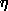
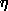

Glossary of SDSS Terminology
This page contains a comprehensive glossary of SDSS-related
terminology. Terms are given in alphabetical order, with definitions and
links to extended descriptions where available. If you come across a term you
don't understand, or think we should include, please submit it to the SDSS helpdesk.
A
adaptive moments
A method of measuring object shapes. These moments are close to
optimal for measuring the shapes of faint galaxies, and have been used
for weak lensing studies. See the Adaptive Moments section of the
algorithms pages.
APO
Apache Point Observatory, located in Sunspot, New Mexico. This is the
location of the 2.5m SDSS telescope as well as the Photometric Telescope (PT), as well as other
non-SDSS telescopes. See APO
homepage.
ARC
Astrophysical Research Consortium. Incorporated in the State of Washington.
Members include the University of Washington; New Mexico State University;
The University of Chicago, Princeton University; Johns Hopkins University;
the University of Virginia; the University of Colorado; the Institute for Advanced Study.
Body that owns and operates APO.
asinh magnitude
Magnitudes within the SDSS are expressed as inverse
hyperbolic sine (or ``asinh'') magnitudes, sometimes referred to informally as luptitudes .
The transformation from linear flux measurements to asinh magnitudes
is designed to be virtually identical to the standard astronomical
magnitude at high signal-to-noise ratio, but to switch over to linear behavior at low S/N and even at negative values of flux,
where the logarithm in the Pogson magnitude fails. Details can be found in the Photometry section of the Algorithms pages, or the Lupton et al. 1999 AJ paper.
asTrans file
FITS binary table with astrometric transformations for every field in a single imaging run. It transforms frame (row,col) coordinates to great circle (mu,nu) coordinates for a given inclination. Available in the DAS.
AstroDA
The data acquisition and analysis system used to collect data from the survey telescope cameras.
Astrom
The data processing pipeline that maps CCD pixel coordinates to celestial coordinates. The detailed workings of this pipeline are described in the Astrometry section of the algorithms pages, or the Pier et al. 2003 AJ paper.
astrometric chip
The SDSS camera
contains 24 2048x400 pixel CCDs (in addition to the 30 2048x2048
photometric CCDs) which are used for astrometry and focus
monitoring. Because they are smaller chips, the effective exposure
time is only 11 seconds, allowing the survey to observe brighter stars
without saturation. These bright star positions are necessary to match
to objects present in astrometric catalogs used by the Astrom pipeline. For more details on these chips,
please see the appropriate section of the camera pages or the AJ
imaging camera paper (Gunn et al. 1998).
astrometry
The detailed methodology utilized by the SDSS is described in the Astrometry section of the algorithms pages.
Astrotools
The Collaboration's software package used for data processing.
atlas image
For each detected object, the atlas image
comprises the pixels that were detected as part of the object in any
filter. These are available through the DAS, as a
single file for each field.

B
Best
We maintain multiple versions of the SDSS imaging data set. The
Best version contains the images and photometric catalogs with
the highest quality data at the time of the data release. The target version contains those data at the time the
target selection algorithm was run for that part of the sky. For
example, the DR1 "best" data set contained better data for some parts
of the sky than the DR1 "target" data set (including most of the EDR
data set).
binned frame
Each file is a FITS image for one filter, 512 x 372 pixels, with WCS information. These are the corrected frames with detected objects removed and binned 4 pixels by 4 pixels. All pixels that are in atlas images are replaced by the background level before binning, with suitable noise added. All of the header parameters from the original image are inherited as well. Available in the DAS.
Black Book
This document provides a description of the
original science goals of the survey, as well as the hardware and
software designs, and was the 1996 proposal to NASA. Please keep in
mind that it is not updated, so information within it may no
longer be current. Nevertheless, it provides an excellent overview of
the survey. The science content of this proposal is available online
in the Project
Book.
boresight
The telescope control computer keeps track
of a specific point in the telescope focal plane that is called the boresight. The boresight is not fixed in the array but is at one of two
places for the two strips that compose a stripe. It is the boresight that will track great circles. Technically, the boresight tracks a path that is a great circle in J2000 coordinates as viewed from the solar system barycenter.
C
calibration
The process by which the photometric and spectroscopic observations are calibrated. The goal of calibration is to take the digital camera readouts and convert them to measured quantities like fluxes. The details of these procedures can be found on the algorithms pages.
camcol
A Camcol is the output of one camera column of CCD's (each with a different filter) as part of a Run. Therefore, 1 Camcol = 1/6 of a Run. It is also a portion of a scanline.
camera
The instrument used for imaging. It consists of 30 photometric and 24
astrometric CCDs (see camera description). The
camera is a mosaic of 54 CCD detectors in the focal plane, 30 large
devices arranged in 6 columns of 5 each and 24 smaller devices around
the periphery. See this sketch
of the camera focal plane or this real life image. The camera is
described in detail in the imaging camera paper (Gunn et al. 1998).
CAS (Catalog Archive Server)
The Catalog Archive Server
is a searchable database that contains the measured parameters from all objects in the imaging
survey and the spectroscopic survey.
CasJobs
A batch (asynchronous) interface to the CAS for querying the database and
storing results. CasJobs is designed to handle especially long or otherwise demanding queies.
Caveats
Also known as "known problems." SDSS maintains a list of issues which are potentially
troublesome but for which we have devised workarounds.
central meridian
The meridian which passes through the center of the survey area, 12h 20m , defines the central meridian of a scan. The great
circle perpendicular to it passing through the survey center at  =32.8deg is the survey equator.
=32.8deg is the survey equator.
child
A product of the deblending process. When two objects are near each other on the sky, their images may appear merged. The deblender tries to split this merged image; the resulting sub-images are called children. The initial merged image is called a parent. For more details, see the Deblending section of the algorithms pages.
chunk
A chunk is a piece of sky composed of a set of touching but non-overlapping primary
segments (or parts of segments) of individual runs which fills a
"chunk" of a stave, and is therefore bounded on
the east and west by lines of constant mu, and
north-south by lines of constant eta (if in the
North). Southern chunks have no eta boundary applied. A chunk may
also have a lambda cut if it is at the end of
the survey region for that stripe. Chunks do not overlap, so the union
of all existing chunks represents the unique sky coverage for the
survey at any given time. See this figure explaining the SDSS survey
geometry for details. Note that the bounds on chunks, if using
mu/eta, are a mix of survey coordinates
and great circle
coordinates. Note: The term chunk has sometimes been used
to describe an area of sky that has had tiling
run on it. This is properly called a tiled
region.
classification (photometric)
The method by which we assign a type (star or galaxy) to each object. The details of this procedure are described in the Classification section of the algorithms pages.
Cloud Camera
A camera at the mountain that takes continuous pictures
of the sky at 10 microns, a wavelength at which clouds emit.
It is a sensitive measure of the photometricity of the sky as a
function of time.
CMM
Coordinate Measuring Machine, a device used to measure the positions
of holes in the fiber mount plates for the spectrographic survey.
Cmodel magnitude
Composite model magnitude. See magnitude,
cmodel.
convex
A convex is the intersection of one or more circles, with a depth (the number of circles
involved). If we have two intersection circles, A and B, then both (A) and (B) are a convex
of depth 1, their intersection (A)(B) is also a convex, but of depth 2. We call these simple
convexes "wedges."
coordinates
The SDSS uses three different coordinate systems. We use
standard astronomical right ascension (RA) and declination (Dec),
J2000. There is also the survey
coordinate system, with coordinates lambda
( ) and eta (). This is just a rotation of the usual RA, Dec
system. Finally, there is the great
circle coordinate system, which is actually a separate
coordinate system for each stripe. The
coordinates of this system are mu () and nu ().
) and eta (). This is just a rotation of the usual RA, Dec
system. Finally, there is the great
circle coordinate system, which is actually a separate
coordinate system for each stripe. The
coordinates of this system are mu () and nu ().
corrected frame
Each corrected frame is a FITS image for one filter, 2048 columns by 1489 rows, with row number increasing in the scan direction. These are the imaging frames with flat-field, bias, cosmic-ray, and pixel-defect corrections applied. A raw image contains 1361 rows, and a corrected frame has the first 128 rows of the following corrected frame appended to it. The pixels subtend 0".396 square on the sky. Header information using the world coordinate system (WCS) allows standard astronomical FITS tools to convert pixel position to right ascension and declination. Available in the DAS.
CSV (comma-separated variable)
Comma Separated Variable file. A file format used commonly for input to and output from the
CAS.
CVS
The Concurrent Versions System, used by SDSS software and website developers to maintain versioning control. An open source project available at https://www.cvshome.org/.
cx/cy/cz
The coordinates on the unit sphere utilized by the HTM code; stored in the CAS.
D
DAS
The Data Archive Server, which provides access to the imaging and
spectroscopic products of the survey. We also provide descriptions of the DAS data access
tools.
data model
The description of the structure and organization of the data in a database. The data model tells you all the tables names, their contents, and how they are related to, and linked with, one another. The actual implementation of a data model is called the database schema. For the flat files available in the DAS, the data models are available here.
deblend
Deblending is the process by which overlapping objects in images are separated. The frames pipeline attempts to determine whether each object actually consists of
more than one object projected on the sky and, if so, to deblend such a parent object into its constituent children, self-consistently across the bands (thus, all children have measurements in all bands). For details on how this works, and what flags this procedure may set, see the Deblending section of the algorithms pages.
Dervish
An FNAL software toolkit used by many of the data acquisition and reduction systems.
deVaucouleurs
Also know as the r1/4 law, it describes the radial light profile of a typical elliptical galaxy. Defined as
I(r) = I0exp{-7.67[(r/re)1/4]}. An elliptical version of this profile is fit to every detected object, yielding the deV parameters. See the model magnitude section of the photometry algorithm page for details.
DR1...7
Data Release 1 through 7, the formal periodic releases of SDSS data to the public. A small portion of the data was
released as part of the Early Data Release
(EDR). The data releases are cumulative: later releases include more recent data and re-processed older data. Thus DR7, the final release, is the definitive version.
Each Data Release is associated with a journal article that describes changes from the previous release.
E
eClass
A value between -1 and +1 assigned by the spectro1d pipeline to each spectrum, derived from
principal component vectors. In general, spectra with lower-temperature absorption features
have more negative eClass, and spectra with higher temperature features or emission lines have
more positive eClass.
EDR
Early Data Release. The first public release of SDSS data occurred in
June of 2001. The EDR is described in the EDR
paper on the AJ web site, also available as EDR paper in HTML.
ellipticity
Measures how elliptical an object is. In the SDSS, we have numerous methods to measure this:
eta
Latitude in the survey coordinate system. Eta is the angle between the survey equator and the great circle passing through the point perpendicular to the survey meridian, positive to the north.
Constant latitude curves are great circles
exponential model
The radial light distribution of a disk galaxy can often be fit by an exponential profile:
I(r) = I0exp(-1.68r/re)
The number 1.68 is chosen so that the
model radius is a half-light radius. An elliptical version of
this profile is fit to every detected object, yielding the exp parameters. See the model magnitude section of the photometry algorithm page for details.
extra plates
Reobservations of main survey plates, useful for variability studies or checks. See the
Sky Coverage page for more information.
F
False color pipeline
A pipeline to produce 3-color JPG files of
zoomed-down SDSS images.
family objects
These are objects that are generated when photometric objects are neither primary nor secondary
survey objects but a composite object that has been deblended or the part
of an object that has been deblended wrongfully (like the spiral arms of a galaxy). These objects
are kept to track how the deblender is working.
fiber
The SDSS spectrograph uses optical fibers to direct the light from individual objects to the slithead. Each object is assigned a corresponding fiberID. The fibers are 3 arcsec in diameter in the source plane. Each fiber is surrounded by a large sheath which prevents any pair of fibers from being placed closer than 55 arcsec on the same plate.
fiberMag
The magnitude measured by the frames pipeline to simulate the flux that would fall into a fiber in typical seeing. See Magnitude, fiber.
field
A field is a part of a camcol that is processed
by the Photo pipeline at one time. Fields are
2048x1489 pixels; a field consists of the frames
in the 5 filters for the same part of the sky. Fields overlap each
other by 128 rows; primaries are decided when
Chunks are resolved (using
objects between rows 64 and1425 as primaries). A field at the edge of
a Chunk may in fact be included in two (or more) Chunks. See this figure explaining SDSS field
geometry for details.
filter
The SDSS uses five filters: u,g,r,i,z to restrict the light reaching each CCD to only certain wavelengths (or colors).
Please read the Camera Page for details. Term is used to describe both the physical
filter and to tag parameters as measured through that filter.
FITS
The Flexible Image Transport System, a standard method of storing astonomical data. The FITS format has a home page.
flag
A bitmask used in the database to specify various properties of an object. There are many flags in the SDSS catalogs such as whether the object was deblended or saturated, for instance. There are
status flags set by PSP, and by survey operations, on a
frame-by-frame basis, describing the quality of the PSF, and the
quality of the data overall. Each object is given status flags
that sort out overlaps. The spectra have flags at two levels
as well: pixel-by-pixel flags, and warning flags accompanying the
redshifts and classification to indicate trouble.
For more help with flags, see the Flags Help Page.
FNAL
Fermi National Accelerator Laboratory, one of the participating institutions in SDSS. Their homepage is http://www.fnal.gov.
footprint
The area on the sky covered by the SDSS. The footprint is described on the sky coverage page.
fpAtlas file
A FITS binary table containing the atlas images for all objects detected in all five filters in a single field. Requires special software to decode into individual FITS images for each object. The FITS images are available in the DAS.
fpBin file
See binned frame.
fpC file
See corrected frame.
fpFieldStat file
A FITS binary table containing a statistical summary of the results of the frames pipeline for one field for a single frames pipeline run. This information is also found in the Field table in the CAS database. Available in the DAS.
fpM file
See mask frame.
fpObjc file
These are FITS binary tables containing catalogs of detected objects output by the frames pipeline. These are uncalibrated, as opposed to the tsObj files, with no targeting information. Available in the DAS.
frame
The data stream from a single CCD in a scanline is cut into a series of frames which measure 2048 x 1489 pixels and overlap 10% with the adjacent frame. The frames in the 5 filters for the same part of the sky are called a field.
frames pipeline
In this pipeline, the images are bias-subtracted and flat-fielded, and bad
columns, cosmic rays, and bleed trails are interpolated over.
This yields corrected frames. Then objects are found by running a
PSF-matched filter over the image, and matched between the
five frames making up a field. A deblender is run to resolve
overlaps, and the properties of each object are written to the
fpObjc files. Atlas images are written to the fpAtlas files.
fundamental standard
The photometry of the primary standard stars
is ultimately tied to the SED of the star BD 17 +4708, which is the
fundamental standard for the SDSS photometric system. See the Smith et al. 2002 AJ paper for more details.
G
GNATS
The system used to report and track bugs and issues with SDSS hardware and software; for collaboration use only.
great circle coordinates
One of the two main coordinate systems
utilized by the SDSS. In this system, mu and nu are spherical coordinates (corresponding to ra and dec) in a system whose equator is along the center of the stripe in question. The stripes of the survey are great circles which all cross at (RA, Dec) = (95, 0). The stripes are defined by their inclination with respect to the equator, and are indexed by integers n such that the inclination of a stripe is -25 + 2.5n. Thus, stripe n=10 corresponds to the Equator. The design is that the area covered by the imaging on a given stripe (the so-called OK_SCANLINE area in the north) is a 2.5 degree wide rectangle centered on nu=0 in Great Circle coordinates.
H
The Hammer
The Hammer is the name of a piece of code developed by the University of
Washington red star analysis team to provide accurate spectral types
and other information for red stars (generally redder than spectral type K,
extending through types M, L and T). The spectral type classifier
output of the Hammer is provided in the sppParams table of the DR7 CAS
for each star in the database. The Hammer provides the best classification
information for redder stars.
HTM
The Hierarchical Triangular Mesh (HTM) is a partitioning scheme to divide the surface of the unit sphere into spherical triangles. It is a hierarchical scheme and the subdivisions have roughly equal areas. HTM is used to index the coordinates in the object databases for faster querying speeds. For more details, and downloadable software, see the HTM Website.
HoggPT
A program which runs on the mountain, which uses information
from the photometric telescope and the cloud camera to determine the
photometricity of a given night. It was written by David Hogg and
colleagues.
hole
A field or set of fields which is missing from the data,
either because of non-photometric conditions, tracking problems, or very
poor seeing.
This is encoded in the status flags.
I
IOP
Imaging Observers Program. The software that runs the imaging camera on the survey telescope.
J
JHU
Johns Hopkins University, one of the participating institutions in SDSS. The SDSS JHU homepage is http://www.sdss.jhu.edu.
JPG
Japan Participation Group, one of the participating institutions in SDSS. Their homepage is http://indus.astron.s.u-tokyo.ac.jp/works/SDSS/sdss.html.
K
L
lambda
One of the coordinates of the survey coordinate system. The stripe longitude lambda is measured from the survey
central meridian positive to the east along the great circles
perpendicular to that meridian. Constant longitude curves are circles
centered on the survey poles .
Legacy
One of the three surveys that comprise the second phase
(SDSS-II)
of the Sloan Digital Sky Survey (SDSS).
It completes the SDSS-I survey of the extragalactic universe. SDSS-I plus Legacy
obtained images and redshifts of a million galaxies and quasars over a contiguous
swath of sky in the Northern Galactic Cap, and three stripes in the Southern Galactic Cap.
luminous red galaxy
SDSS luminous red galaxies (LRGs) are selected on the basis of color and magnitude to yield a
sample of luminous intrinsically red galaxies that extends fainter and farther than the
SDSS main galaxy sample. See Eisenstein
et al. (2001) for detailed discussions of sample selection, efficiency, use, and caveats.
luptitude
An informal name for the asinh magnitude.
M
maggie
A maggie is a linear
measure of flux; one maggie has an AB magnitude of 0 (thus a surface
brightness of 20 mag/square arcsec corresponds to 10-8 maggies
per square arcsec). This unit is used for object radial profiles, where we provide the azimuthally averaged object surface brightness in a series of annuli.
magnitude, cmodel
Composite model magnitude. The magnitude obtained from the
best-fitting linear combination of the best-fitting de Vaucouleurs and
exponential model for an object's light profile (cf. magnitude, model). See cmodel magnitude
description in Photometry section of the Algorithms pages.
magnitude, fiber
The flux contained within the aperture of a spectroscopic fiber
(3" in diameter) is calculated by the frames pipeline in each band and stored in
fiberMag. Details can be found in the Photometry section of the Algorithms pages.
magnitude, model
Just as the PSF magnitudes are optimal measures of the fluxes of
stars, the optimal measure of the flux of a galaxy would use a matched galaxy
model. With this in mind, the code fits two models to the
two-dimensional image of each object in each band:
1. a pure deVaucouleurs profile, and
2. a pure exponential profile.
The best-fit model in the
r-band is fit to the other four bands; the results are stored as the
model magnitudes.
Details, including a very important warning, can be found in the Photometry section of the Algorithms pages.
magnitude, Petrosian
Stored as petroMag. For galaxy photometry, measuring flux is more difficult than for stars, because galaxies do not all have the same radial surface
brightness profile, and have no sharp edges. In order to avoid
biases, we wish to measure a constant fraction of the total light,
independent of the position and distance of the object. To satisfy these
requirements, the SDSS has adopted a modified form of the
Petrosian (1976) system, measuring galaxy fluxes within a circular
aperture whose radius is defined by the shape of the azimuthally
averaged light profile.
Details can be found in the Photometry section of the Algorithms pages and the Strauss et al. 2002 AJ paper on galaxy target selection.
magnitude, Pogson
The Pogson magnitude is the standard
astronomical magnitude system, where one increment in magnitude is an
increase in brightness by the fifth root of 100. A star of 1st
magnitude is therefore 100 times as bright as a star of 6th
magnitude. That is, for two objects
M1 - M2 =
-2.5log(F1/F2)
where M1 and M2 are the magnitudes of two
objects, and F1 and F2 are their luminous fluxes.
magnitude, PSF
Stored as psfMag. For isolated stars, which are well-described by the point spread function
(PSF), the optimal
measure of the total flux is determined by fitting a PSF model to the
object. Details can be found in the Photometry section of the Algorithms pages.
main sample
Also known as the Main Galaxy Sample or Main. This is the tiled sample of galaxies in the SDSS that
is limited by the r-band flux. The main galaxy sample target selection algorithm is detailed in
Strauss et al. (2002).
mask
Regions of data that are excluded from analysis. For example, some wavelength regions in the
spectra may be masked out, some pixels in the photometric images may suffer from cosmic rays and
so are masked out, and some parts of the sky (e.g. around bright stars) may be masked.
mask frame
Each file is a binary FITS table for one filter. Each row of the table describes a set of pixels in the corrected frame, using mask values described in Table 8. Available in the DAS.
MAST
The Multimission Archive at Space Telescope. Data from a variety of space missions and ground-based telescopes is provided, including the Sloan EDR. The site is located here.
MJD
Modified Julian Date. A standardized sequence number with units of days that is useful for
unambiguous marking of time, e.g. for tracking a variable star.
modelMag
The model magnitude. See magnitude, model.
Monitor Telescope (MT)
The previous incarnation of the Photometric Telescope (PT).
MT field
See secondary patch.
mtpipe
The pipeline for processing data from the Photometric Telescope. A description can be found in the appropriate section of the EDR paper.
mu
One of the coordinates in the SDSS great circle coordinate system. Mu corresponds to RA, or longitude.
N
nfCalib
The pipeline that uses the results of MTPipe and
astrom to apply the photometric
and astrometric calibration to each object in the imaging data. The data products are called nfCalib files.
nu
One of the coordinates in the SDSS great circle coordinate system. Nu corresponds to Dec, or latitude.
O
object
Enumerates detected photometric objects within a given field. Thus, multiple fields may have objects with the same object number.
Objectivity
A brand of object-oriented database used to
initially serve the EDR and to run OpDB.
ObjID
The long object identification, which is a
bit-encoded integer of run, rerun,
camcol, field, object. Note that when the data are reprocessed (rerun), the object identification changes. IMPORTANT NOTE: For spectroscopic objects, there are two possible choices for the matching photometric measurement: TargetObjID is the photometric object identification number of the corresponding photometric object when targeting was run, and BestObjID, which points to the best imaging and processing of the photometry.
OpDB
The survey's internal Operations Database at FNAL.
P
par file
Also known as a Yanny parameter file. This is a simple ascii file format developed to store lists of parameters for the SDSS, such as the survey coverage description.
parent
A product of the deblending process. When two objects are near each other on the sky, their images may appear merged. The deblender tries to split this merged image; the initial merged image is called a parent, while the resulting sub-images are called children. For more details, see the Deblending section of the algorithms pages.
participating institution
One of the institutions involved in the survey. These institutions have contributed hardware, software, manpower, or financial support to the survey, and thus have pre-public access to data.
petroMag
The Petrosian magnitude. See Magnitude, Petrosian
petroRad
The Petrosian radius. A measure of the angular size of an image, most meaningful for galaxies.
Units are seconds of arc. The Petrosian radius (and related measures of size called petroR50
and PetroR90) are derived from the surface brightness profile of the galaxy, as described
in Algorithms.
Photometric Pipeline (Photo)
A series of linked pipelines (Serial Stamp Collecting pipeline, SSC; Postage Stamp Pipeline, PSP, and
Frames) which analyze the raw image data, including bias
subtraction, sky and PSF determination, flat-fielding, and finding
and measuring the properties of objects. The astrometric and
photometric calibration is carried out with the astrometric
pipeline and nfCalib.
Photometric Telescope
Also abbreviated PT. A 0.5-meter
telescope used for monitoring the transmission of the atmosphere during
the course of the survey. Its principal function is to aid
in accurately calibrating an object's brightness as measured with the
main 2.5-m telescope. See the PT web
page for more details.
photoTag
A table that includes only the most frequently accessed PhotoObj columns. GalaxyTag and StarTag are
views of PhotoTag that contain only Primary extended images and point-like images, respectively.
None of these tables and views contain spectroscopic information.
photoZ
The photometric redshift. The measured colors of galaxies and quasars are observed to depend on
their redshift. This enables a technique called "photometric redshifts" whereby the redshift
can be estimated from the measured colors, in the absence of a spectrum. Photometric redshifts
have larger random and systematic errors than spectroscopic redshifts, but they can be obtained
for fainter and thus many more galaxies and quasars.
plate
Each spectroscopic exposure employs a large, thin, circular metal plate that positions the
fibers via holes drilled at the locations of the images in the telescope focal plane. Each plate
has a unique serial number, which is called plate in views such as SpecObj.
plate mapper
An instrument that maps which plugged fiber corresponds to which target object. The 640 fibers of the spectrograph are placed by hand without regard to which fiber corresponds to which position. An automated fiber mapper resolves this object-to-fiber match-up by scanning lasers across the terminal ends of the fibers and observing where they ``light up'' on the focal plane.
poles
SDSS uses a number of coordinate systems to describe positions on the sky. These are spherical polar
coordinates, where great circles are lines of longitude that converge at the poles. Specifying the
location of the poles on the sky is part of the definition of the coordinate system.
Point Spread Function (PSF)
The detailed shape of the response of the
telescope plus instrument to a star. It varies with position, filter,
and time, due to changes in the atmosphere and the optics of the
telescope. It is calculated by the PSP.
Postage Stamp pipeline (PSP)
This pipeline determines for a run
the background sky, the flat-field, and the spatially varying Point
Spread Function (PSF) in each CCD, all of which will be used by
the Frames pipeline.
Primary (object)
The ``main'' observation of an object. Because there are overlaps at many levels of the imaging (runs, stripes), an object may be observed two or more times. Whether or not a specific observation of an object is the primary is
decided when chunks are resolved. Whether an object is primary or not depends on a large number of factors.
primary standard
One of the 158 stars on the SDSS photometric
system that is observed by the PT to measure the extinction of a
given night, and which is used to calibrate the magnitudes of the
secondary standards. The primary standard system is described
in the Smith et al. 2002 AJ paper.
profile
An azimuthally-averaged radial
surface brightness profile. In the catalogs, it is given as the
average surface brightness in a series of annuli. This quantity is in
units of maggies per square arcsec. The number of annuli for which there is a
measurable signal is listed as nprof, the mean surface
brightness is listed as profMean, and the error is listed as
profErr. This error includes both photon noise, and the
small-scale ``bumpiness'' in the counts as a function of azimuthal
angle.
When converting the profMean values to a local surface
brightness, it is not the best approach to assign the mean
surface brightness to some radius within the annulus and then linearly
interpolate between radial bins. Do not use smoothing
splines, as they will not go through the points in the cumulative
profile and thus (obviously) will not conserve flux. What frames pipeline
does, e.g., in determining the Petrosian ratio, is to fit a taut spline to the
cumulative profile and then differentiate that spline fit,
after transforming both the radii and cumulative profiles with asinh
functions. We recommend doing the same here.
The annuli used are provided in this table.
Project Book
The SDSS Project Book includes a detailed scientific justification and plan for SDSS, as well
as comprehensive descriptions of the hardware. At one point it was called the Black Book.
psField file
A FITS binary table with preliminary photometric calibration, as well as final point-spread-function fit, for a single field in an imaging run. Available in the DAS.
psfMag
The PSF magnitude. See Magnitude, PSF
Q
Quality Assurance (QA)
Generally speaking, the process by which data
are confirmed to be of survey quality. Each pipeline carries out QA,
whose results are available for examination. After
the imaging data are calibrated, they are run through a comprehensive
set of tests (runQA) that confirm that the various photometric
measures are consistent, and that, e.g., the Zhed point is
well-behaved. Overlap QA looks for consistency in the photometry and
astrometry of objects in overlaps between adjacent scanlines and stripes.
QA hole
A spectroscopic target selected for quality assurance (QA, i.e., various kinds of tests) with a
drilled hole in the respective plate.
quasar
The spectro1d pipeline classifies some objects as "quasars" (e.g. as labeled at the bottom of the
gif plot). Objects are classified as quasars by the spectro1d pipeline if it detects an emission
line wider than 1000 km/sec (full-width at half-maximum). The Early Data Release paper gives a more complete
description of the classification process (but is outdated in that the EDR paper describes
a selection based on a full-width at half-maximum of only 500 km/sec).
R
Reconstructed Frame
Images of SDSS fields constructed by "pasting" atlas image cutouts into the field and filling the rest of the image with simulated sky noise.
reddening
Reddening corrections in magnitudes at the position of each object,
reddening, are computed following Schlegel, Finkbeiner & Davis (1998). The
only magnitudes in the CAS that include these corrections are dered_u, dered_g, etc.
region
A region is the union of convex areas
rerun
A reprocessing of an imaging run. The underlying imaging data are the same, just the software version and calibration may have changed.
resolve
A term describing the assignments of subsets of data (fields, segments, runs) to fill a chunk. A chunk is "resolved" when there are sufficient data to fill a contiguous length of a stripe. At that time, decisions are made on the best data to use (seeing, photometric conditions) to fill the desired area. A chunk can be resolved multiple times, as new data are acquired or data are reprocessed (see Target and Best)
Run
A Run is a length of a strip
observed in a single continuous observing scan, bounded by lines of mu and nu. A strip covers a great circle region from pole to
pole; this cannot be observed in one pass. The fraction of a strip
observed at one time (limited by observing conditions) is a Run. Runs
can (and usually do) overlap at the ends. Like strips, it takes a pair
of runs to fill in a length of a stripe. This
is why you may read about data taken from "Runs 752/756" or some
similar terminology. Each individual run contains 6 camcols spanning the same range of nu, but not
delimited by eta. These run pairs might not have
the same starting and ending nu coordinates. See
this figure for details.
Runs database
A database accessible via the CAS that contains photometric catalog parameters
derived from all runs, not just runs with quality sufficiently good to
support spectroscopic targeting. The Runs database is designed to facilitate comparison of the
same part of the sky at more than one epoch.
S
scanline
A subdivision of a strip. Each strip is covered by 6 "scanlines". Scanlines are defined in
great circle coordinates. The great circle coordinate
system is different for each strip, and is defined by setting the
equator of the coordinate system to be the center line of constant eta
for the stripe to which the strip belongs. A scanline is then bounded on the top and bottom by
lines of constant nu, with no east or west boundaries.
Scanlines touch but don't overlap, and thus are a unique mapping on the
sky for that stripe only. Scanlines for different stripes DO overlap. This is because the scanlines come from the camera columns, or camcols, which
have a fixed physical width, while the spherical coordinates converge at the poles. See this figure for details. Note: The term scanline has been used interchangeably (and improperly) with camcol.
schema
The implementation of a data model in a database.
schema browser
A directory in the CAS that lists all of the tables and views, and the names of
the parameters stored in them, with brief descriptions.
science archive
Also known as the SX, this was the prior incarnation of the database containing the object catalogs for the SDSS (for the EDR).
science primary
Spectra that are considered good enough for science are marked as sciencePrimary spectra and included
in the SpecObj view of the SpecObjAll table. There are several criteria used to determine whether
the sciencePrimary flag should be set to 1 for an object in the SpecObjAll table. These are
described in the FAQ entry for sciencePrimary.
SDSS
The Sloan Digital Sky Survey http://www.sdss.org.
SDSS-II
The second phase of the SDSS extended from July 2005 to July 2008 and has three components:
- Legacy
- SEGUE
- Supernova
sdssQA
The SDSS Query Analyzer. A Java-based Graphical User Interface (GUI) that provides the functionality necessary for SDSS users to prepare and submit queries to the SQL server database.
sdssQT
Obsolete. This was the SDSS Query Tool, used for the Early Data Release. It is a Graphical User Interface (GUI) that provides the functionality necessary for SDSS users to prepare and submit queries to the Science Archive, the 'end product' of the SDSS, where all publicly available scientific data products are stored and
ready for access.
secondary object
The best observation of an object with multiple observation is called the primary
object, and other observations are stored in the PhotoObjAll table and PhotoObj view as
secondary objects.
secondary patch
The PT observes a series of
secondary patches on a given night, calibrated to the system of
primary standards. These patches overlap the 2.5m survey stripes; with the photometry determined for these, we can set the zeropoints
of the 2.5m runs.
sector
A sector is basically an intersection of TileRegions. It is a plate wedge
modified by intersections with overlapping tile boundaries.
If the TilingBoundary regions are complex (multiple convexes)
or if they are holes (isMask=1), then the resulting sector is also complex (a region of multiple
convexes). As such, a sector is just a single convex. Tiling boundaries do not add any depth to
the sectors; they just truncate them to fit in the boundary.
segment
A segment is a piece of a given frames pipeline
reduction (run/rerun/camcol), covering a piece of a scanline, bounded on the east and west by lines
of constant mu. Because segments are defined before
the primary area of a stripe, segments can actually go beyond the eta limits of a stave (and a chunk). Indeed, near the very end of a stripe (near
the poles), a segment may fall completely outside a stave. See this figure for details.
SEGUE
The
Sloan Extension for Galactic Understanding and Exploration
mines the stellar content of the Milky Way in order to create a
detailed 3-dimensional map of the Galaxy.
SEGUE obtained 3500 square degrees of new imaging data, including scans at low Galactic latitude. SEGUE obtained spectra of 240,000 stars in the disk and spheroid,
revealing the age, composition and phase-space distribution of stars within the
various Galactic components.
These stellar excavations provide essential clues for understanding the structure,
formation and evolution of our Galaxy.
SEGUE is one of the three surveys that comprise the second phase
(SDSS-II)
of the Sloan Digital Sky Survey (SDSS).
serendipity
An open category of targets whose selection criteria explore different regions of parameter space.
These include:
- objects lying outside the stellar locus in color space (SERENDIP_RED, SERENDIP_BLUE, SERENDIP_DISTANT)
- objects coincident with FIRST sources but fainter than the equivalent in quasar target selection; also not restricted to point sources (SERENDIP_FIRST)
- hand-selected targets (SERENDIP_MANUAL)
Serial Stamp Collecting Pipeline (SSC)
The first stage of the
Photometric pipeline. It collects for further analysis the atlas
images of stars to be used in astrometric calibration and PSF
determination.
Alfred P. Sloan Foundation
A philanthropic nonprofit institution (www.sloan.org) established in 1934 by Alfred Pritchard Sloan,
Jr., then President and Chief Executive Officer of the General Motors Corporation. An early award from
the Sloan Foundation was recognized by naming the survey the Sloan Digital Sky Survey. The Sloan
Foundation has continued to be a major supporter of SDSS.
SkyServer
The public outreach website for distribution of SDSS data. Includes tools to get images, spectra, and catalog info, as well as educational and fun materials.
sky version
The SkyVersion is a numerical designator of whether photometric data is Target (SkyVersion=0), Best (SkyVersion=1), or one of the repeated scans of the Southern Survey (SkyVersions 2 through 14).
small circle
A section of a sphere which does not contain a diameter of the sphere. Lines of constant latitude are small circles.
Supernova
One of the three surveys that comprise the second phase
(SDSS-II)
of the Sloan Digital Sky Survey (SDSS).
It features repeated sweeping of the sky to find these remnants
of gigantic explosions from dying stars.
Astronomers can precisely measure the distances of distant supernovae,
using them to map the rate of expansion of the universe.
This study will help quantify the properties of cosmological dark energy.
Son-of-Spectro
A pared-down version of spec2d that runs on the
mountain, and gives feedback to the observers about the S/N of each
spectroscopic exposure and any possible problems in the data.
SOP (spectroscopic observing program)
This is the program which
operates the spectrographs, including guiding the telescope and
controlling the calibrations.
Southern Survey
Three stripes in the Southern Galactic Cap with associated spectroscopy. More commonly used to denote the equatorial stripe (Stripe 82) and its associated spectroscopy.
Stripe 82 has been observed repeatedly to enable variability studies and to coadd for deeper images.
specClass
A parameter in the SpecObj view that indicates the best-matching spectroscopic template. For example,
if SpecClass = 1, then the best-matching template was of some kind of star. Similarly SpecClass = 2
means galaxy and SpecClass = 3 or 4 means quasar.
Spec1D
The second half of the spectroscopic pipeline, also known as Spectro 1D, which
classifies the spectra and
performs various analyses on them, including obtaining the
redshifts. The operational goals of the 1D SPECTRO pipeline are:
- To fit the continuum of the spectrum.
- To determine an emission-line redshift and identify all detected emission
lines. A flag will also be set to identify any expected emission
lines (on the basis of the spectral classification) which were not seen.
- To classify the spectrum by cross-correlating with a set of
template spectra ranging from
stars to quasars. A principal component
analysis similar to that of Connolly et al. (1995)
has also been implemented - see galaxy spectral classification details.
- To cross-correlate the spectrum with the a set of templates and
obtain redshifts (a href="../algorithms/redshift_type.html">Details here).
- To fit a set of emission/absorption lines as a Gaussian (a href="../algorithms/speclinefits.html">Details here).
- To measure the velocity dispersion of galaxies (a href="../algorithms/veldisp.html">Details here).
- To measure various absorption line indices, as outlined in the EDR AJ paper.
Spec2D
The first half of the spectroscopic pipeline (also sometimes referred
to as idlspec2d), which reduces the raw 2D spectral frames to 1D calibrated
spectra (flux versus wavelength). The operational goals of the 2D SPECTRO pipeline are:
- To interpolate over bad pixels
- To mask all bad pixels and pixels contaminated by strong sky emission.
- To bias and dark subtract the raw 2D data frames
- To trim the frame
- To flat-field using calibration frames taken at
the same telescope pointing position before and after an exposure
on the sky.
- To optimally extract 1D spectra from this 2D frame.
- To apply wavelength calibration, rebin to a common
wavelength solution, and sky subtract.
- To coadd the three or more individual exposures for each
object.
- To put the red and blue halves of the spectrum together.
- To flux calibrate the spectrum to obtain
spectrophotometry good to roughly 15%, using the measured photometry
of spectrophotometric standards on each plate.
SpecBS
An alternative 1-d spectroscopic pipeline developed by David Schlegel. The data and documentation for this pipeline are available at http://spectro.princeton.edu/ and via the DAS.
SpecObjID
A unique bit-encoded 64-bit ID used for spectroscopic objects. It is generated from plateid, mjd, and fiberid. Completely independent of any photometric enumeration system.
special plates
Special plates obtain spectra beyond the main survey targets, according to a variety of schemes for
selecting targets. A list of the special plates, and a description of the targeting scheme, is given
in the Sky Coverage pages.
Spectro
The spectroscopic data reduction pipeline. See Spec2D and Spec1D for details.
spectrograph
The instrument used to obtain spectra of objects. SDSS actually uses two identical spectrographs, each receiving as input 320 of the fibers from a plate. Details of the spectrograph can be found on the spectrograph page.
spectrophotometry
The procedure for absolute flux calibration of spectra. Please see the Spectrophotometry section of the algorithms pages for an extensive description.
sppLines
The 'SEGUE Stellar Parameter Pipeline' computes line indices for a wide range of common features
at the radial velocity of the star in question. These outputs are stored in the CAS
in a table called 'sppLines', indexed on the 'specObjID' key index parameter for queries joining
to other tables such as specobjall and photoobjall.
sppParams
A pipeline called the 'SEGUE Stellar Parameter Pipeline' (sspp) computes standard stellar atmospheric
parameters such as [Fe/H], log g and Teff for each star by a variety of methods. These outputs are
stored in the CAS in a table called 'sppParams', indexed on the 'specObjID' key index parameter for
queries joining to other tables such as specobjall and photoobjall.
spPlate file
A FITS image containing the wavelength- and flux-calibrated combined spectrum over all exposures (potentially spanning multiple nights) for a given mapped plate. Output as part of spec2d, it does not contain redshift information. Available in the DAS.
spSpec file
A FITS image containing the line measurements and redshift determinations, as well as the 1-d spectrum, for a single object, summing over all of its exposures through a given mapped plate. Available in the DAS.
SQL
The Structured Query
Language, a standard means of asking for data from
databases. For more, see our SQL help
page.
SSPP
The SEGUE Stellar Parameter Pipeline,
is the union of a set of techniques gathered together in one
set of pipeline for measuring common stellar atmospheric parameters
(namely metallicity, effective temperature and surface gravity) for
stars based on medium resolution (R ~ 2000) spectra of the stars,
combined with accurate stellar photometry. This pipeline yields Teff, [Fe/H] ([M/H]), and log g measurements
for all stars of sufficient S/N (generally better than 10 or 15 for bluer stars). The results are available in the CAS in the sppParams table.
stave
A unique region of sky, bounded by two lines of constant eta. A stave is a portion of a stripe that is tapered near the poles so that it does not overlap with the neighboring stave. This term is used analogously to the meaning of stave in barrelmaking.
Stokes Parameters
These quantities are related to object ellipticities. Define the flux-weighted second moments of the object as:
Mxx = <x/r2> ,Myy = <y2/r2> , Mxy = <xy/r2>
In the case that the object's isophotes are self-similar ellipses, one can show that:
Q = Mxx-Myy = [(a-b)/(a+b)]×cos2
U = Mxy = [(a-b)/(a+b)]×sin2
where a and b are the semimajor and semiminor axes and is the position angle. Q and U are Q and U in the table
PhotoObj and are referred to as "Stokes parameters." They can be used to reconstruct the axis ratio and position
angle, measured relative to row and column of the CCDs. This is equivalent to the normal definition of position
angle (east of north), for the scans on the equator. The performance of the Stokes parameters are not ideal at low
signal-to-noise ratio, in which case the adaptive moments will be more useful.
strip
A strip is a scan along a line of constant survey latitude eta. The center of a stripe is set at a given eta;
centers of strips have a boresight offset
added. Because the columns of CCDs have gaps between them, it is
necessary to take two offset but overlapping observations to fill in a
stripe. These two scans are called strips, one North and one South. Note
that while strips are centered on a given eta, THEY ARE NOT BOUND BY
ETA LINES. Thus they are rectangular regions and can overlap at the
poles. See this figure for
details.
stripe
Stripes are the sum of two strips, defined in survey coordinates (lambda, eta). A "stripe" is
defined by a line of constant eta, bounded on the north and south by
the edges of the two strips that make up the stripe, and bounded on
the east and west by lines of constant lambda. Because both strips and
stripes are defined in "observed" space, they are rectangular areas
which overlap as one approaches the poles. See this figure for
details. NOTE: You may see the term stripe used to mean an area
bounded by eta lines, which would be a unique part of the sky. That is
a common use of the term, as some of the target selection
documentation uses it that way. The proper (and relatively new) term
for the unique, eta-bound portion of a stripe is a stave.
stripe 82 coadd
An SDSS data product that sums (i.e., co-adds) individual pixels from the photometric sections of
runs on Stripe 82. There are two coadds: one for the North strip and one for the South strip.
These co-added runs were processed via the photometric pipeline to produce catalog values for
objects that go much deeper than the individual runs. Thus "Stripe 82 coadd" can also refer to
the catalog values as well as to the pixels.
stripe 82 database
The Stripe 82 database, accessible via the CAS, includes the Stripe 82 coadds
as well as all runs ever obtained on Stripe 82. Runs obtained earlier than 2004 were in photometric
conditions and were part of the Southern Survey. More recent runs were for the Supernova Survey
and have a faster cadence, but were often obtained in non-photometric conditions, or with Moon,
or with poor seeing. All of the runs have been calibrated in a uniform way, although the
non-photometric runs will of course have larger errors.
surface brightness
The frames pipeline also reports the radii containing 50% and 90% of the Petrosian flux for each band, petroR50 and petroR90 respectively. The usual
characterization of surface-brightness in the target selection pipeline of the SDSS is the mean surface brightness within petroR50.
It turns out that the ratio of petroR50 to petroR90, the so-called ``inverse concentration index'', is correlated with morphology (Shimasaku et al. 2001,
Strateva et al. 2001). Galaxies with a de Vaucouleurs profile have an inverse concentration index of around 0.3; exponential galaxies have an inverse
concentration index of around 0.43. Thus, this parameter can be used as a simple morphological classifier.
An important caveat when using these quantities is that they are not corrected for seeing. This causes the surface brightness to be underestimated, and
the inverse concentration index to be overestimated, for objects of size comparable to the PSF. The amplitudes of these effects are not yet well
characterized.
supernova campaign
One of the three observing seasons for the Supernova survey, namely September through November of
2005, 2006, and 2007. Some test data were also obtained in Fall of 2004.
supernova stripe
Stripe 82, the celestial equatorial stripe that is visible in the Fall and observed in each
Supernova campaign. (In practice the Supernova data extend slightly beyond the formal definition
of Stripe 82, comprising in total 120 degrees from RA = 20h to RA = 4h.)
survey coordinates
One of the two main coordinate systems used by the
survey, with coordinates eta and lambda.
This is simply another spherical coordinate system, where (eta,lambda)=(0,90.) corresponds to (ra,dec)=(275.,0.) and (eta,lambda)=(57.5,0.) corresponds to
(ra,dec)=(0.,90.). Note also that at (eta, lambda)=(0.,0.),
(ra,dec)=(185.,32.5). So, this is a pure rotation of the usual RA/Dec system, as opposed to the great circle system, which is defined relative to each individual stripe.
For some reason, although "eta" is constant along great
circles, it is referred to as "survey latitude," while "lambda" is referred to
as "survey longitude." Also, "eta" runs only from -90. to 90.; the back of
the sphere is covered by "lambda", which runs from -180. to 180. The Survey
coordinates are defined such that the "primary" area of a
stripe (otherwise known as a stave) in the north
is defined by a rectangle in Survey coordinates which is 2.5 degrees wide in
eta (coordinate width).
survey equator
The great circle perpendicular to the central meridian, passing through the survey center at delta=32.8deg is the survey equator.
survey poles
The locations of the poles in the survey coordinate system. Due to the unusual nature of this system, there is an east pole and a west one, at delta = 0 , alpha = 18h 20m and 6h 20m.
SX
An abbreviation for the old Science Archive. This was the prior incarnation of the database containing the object catalogs. utilizing Objectivity software.
T
Table
A specific set of objects and their measured quantities stored in a database.
Target
1. An object selected as a candidate for spectroscopy.
2. The pipeline used to select candidate for spectroscopy (also called the TS pipeline). The
procedures and various type of targets are described in the the Target algorithm page.
3.The version of the data set containing photometric
measurements for objects at the time Target was run. If
newer observations or improved calibration or software becomes
available, the imaging data may be reprocessed, but not
re-Targeted. The improved photometry is provided in the
separate Best data set.
target selection
A general term used to describe how objects are selected for spectroscopic observation. A priori,
one has only the photometric parameters, thus the "target selection algorithm" gives the rules
whereby a statistically complete sample of galaxies, quasars, or stars is selected within each
tile on the sky.
TDI
The SDSS imaging data are taken in time-delay-and-integrate (TDI) mode at the sidereal rate almost simultaneously in five bands. The sky tracks through 5 CCD detectors in succession, each located behind a different filter. See this image to get a better idea.
tilable target
These are spectroscopic targets which are assigned to tiles by tiling. The significance of this is that tilable targets are supposed to have as close to uniform completeness as possible and it should be possible to define well-defined samples of such targets. The bitmasks primTarget and secTarget described in the description of the target selection contain the target assignments of each object. Tilable targets for the survey proper are those with the primTarget flags QSO_HIZ, QSO_CAP, QSO_SKIRT, QSO_FIRST_CAP, QSO_FIRST_SKIRT, GALAXY_RED, GALAXY, GALAXY_BIG, GALAXY_BRIGHT_CORE, or STAR_BROWN_DWARF, and those with the secTarget flag HOT_STD.
tile
A 1.49 deg radius circle on the sky determined by tiling and which contains the locations of up to 592 tilable targets and other science targets. For each tile one or more plates will be created. If less than the maximum of 592 tilable targets can be assigned to that tile, the spare fibers are assigned to other spectroscopic targets. The 48 remaining fibers are assigned to calibration targets.
tiled region
TileRegion is a term used to indicate the portion of a Tile that may have targets
(i.e. within the union of the TilingBoundaries for a TileRun
and outside the union of the TilingMasks for the TileRun and the global
TilingMasks). These are not necessarily convex, because of the TilingMasks.
tile run
A TileRun represents a single run of the tiling software. It is a logical unit of geometrical
information that consists of a set of TilingBoundaries,
TilingMasks, and Tiles that are associated with
exactly one TileRun (ie each TilingBoundary, TilingMask, and Tile is associated with exactly
one TileRun, with one exception that will be noted later). Sometimes this is also called a
tiling chunk, although that is incorrect usage of the term and it should not be confused with
an imaging chunk.
tiling
The process of designing tiles for spectroscopy.
tiling boundary
A TilingBoundary is a set of "rectangles" that defines the area of the sky that may be tiled in a
TileRun. Only targets from within the union of the
TilingBoundaries for a TileRun may be assigned to Tiles created
during a TileRun. A single TilingBoundary must be contained within a single chunk.
tiling mask
TilingMasks are "rectangles" that should not be considered part of the tileable area
during a TileRun.
TPM
Telescope Performance Monitor. Software that reports on the physical parameters of the survey telescope.
tsField
The tsField files are FITS binary tables containing the information about each imaging field that is exported to the Field tables in the CAS. Available in the DAS, in both Best and target versions.
tsObj
The tsObj files are FITS binary tables containing calibrated object catalogs output by the frames pipeline, one per field. They are available from the DAS, in both Best and target versions, and form the basis for the photometric data found in the PhotoObj table in CAS.
tsObjFromMap
A tsObj file containing the calibrated information only for those objects which have been targeted. Available in the DAS.
type
Also known as PhotoType. A classification available in the photoObjAll table and related views
that refers to image morphology (namely, the image profile does or does not match the
point-spread function). Type = 3 is "galaxy," and type = 6 is "star."
U
Ubercal
Ubercal is a method of recalibrating the SDSS Imaging survey,
using a 'global' rather than a 'local' (scan-by-scan), technique
of solving for zeropoints and extinction for each camera-column
for each run. It makes heavy use of overlapping 'crossing scans',
which run at an oblique angle to the standard survey stripes and
yield multiple detections of the same stars in different camera columns.
Application of the Ubercal techniques suggests that
the overall scatter in the photometry of the survey can be reduced
from about 2% rms in the gri bands down to 1% rms. The Ubercal outputs are available for the whole
of the Main survey imaging footprint in the CAS. They are
available as both offsets from the standard SDSS photometry and
as stand-alone magnitudes for each primary object.
V
View
In a database, a way of looking at a subset of the data in a given Table. Views are treated just like Tables in SQL queries. For example, in the CAS, the Galaxy view shows only the subset of PhotoObj table that are morphologically classified as galaxies.
W
WCS
World Coordinate System. The FITS standard for defining
astrometric calibrations in the image header.
X
Y
Z
zConf
Literally the confidence that the redshift is correct, zConf is more broadly a measure of the
likelihood that the spectral template (and thus spectral classification and redshift) is correct.
Except for intrinsically featureless spectra, it is generally correlated with the signal-to-noise
ratio in the spectrum.
zhed point
The stellar locus in SDSS color-color space is essentially
one-dimensional. Various canonical positions in color-color space
can be defined from bends in the stellar locus; we call these
positions the Zhed Points. The constancy of these positions (after correcting for reddening) is a
very useful test of the uniformity of our photometry.
zStatus
The adopted redshift (the spectroscopic parameter z) may be determined by one of a number of
algorithms, and it can be manually overridden in problematic cases. The zStatus flag encodes which
method was actually used.
Last modified: Wed Jun 27 17:45:42 CEST 2007